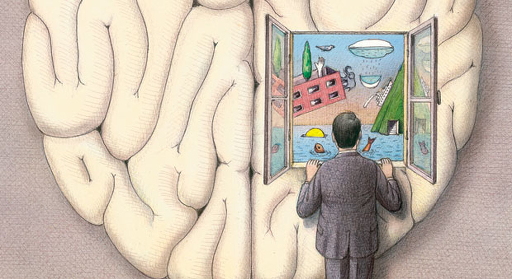
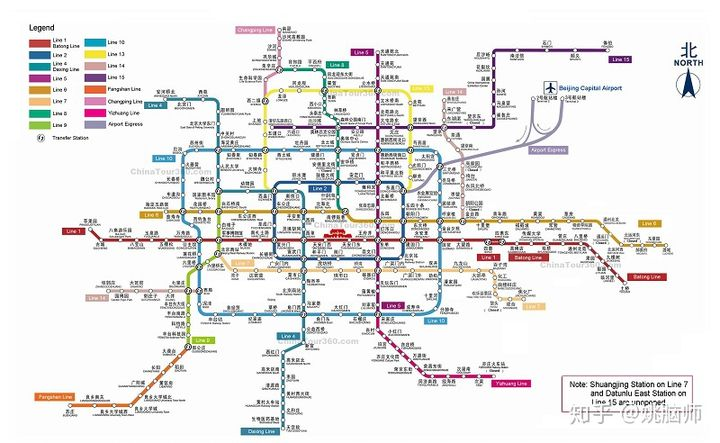
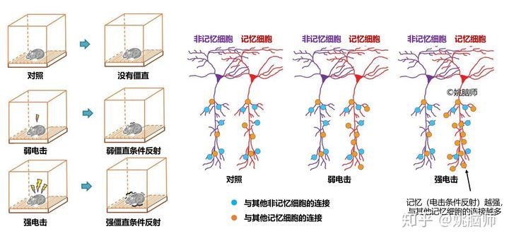
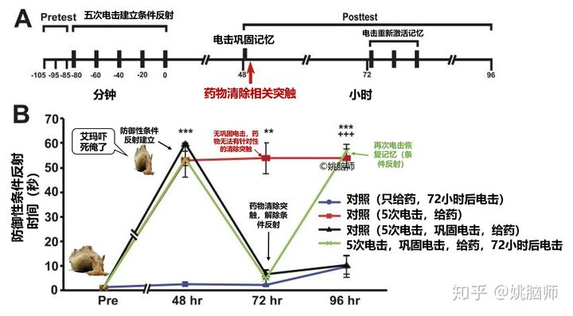
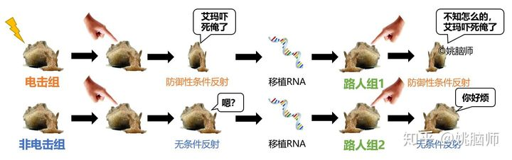

「我」由记忆而生，因记忆而亡。
「我」的梦想、快乐和恐惧都离不开「我」的人生经历。
而当我年老失忆，「我」便也不复存在。
记忆可以说是我们人生中最宝贵的宝藏。然而它看不见摸不着，它到底在哪呢？
1 寻找记忆的足迹
科学家一向认为长期记忆（long-term memory）就像书架上的书一样，在大脑中是以独立的单位存在的。
早期的科学家认为大脑有专门掌管记忆的脑区，就像一个专门的图书馆。如果把大脑的图书馆拆除的话，人就会失去记忆。

早在1950年，Karl Lashley就尝试寻找记忆在大脑中的足迹（engram） [1]。他先训练小鼠学习走迷宫。小鼠学好了以后，他把小鼠大脑皮层的一部分切除，再让它们重走迷宫。Lashley发现切除皮层会损伤小鼠对迷宫的记忆。但是记忆的损伤只跟皮层切除的大小有关，而跟切除的位置没有关系。
这也就是说，大脑并没有一个固定的「记忆图书馆」。记忆很可能是分散地储存在大脑的各个角落。
2 记忆的网络
现在我们认为记忆是由一组网状分布的神经元来编码储存的。这些神经元通过突触（synapses）的形式连接，而我们的记忆就由连接的方式和强度来编码。
如果说北京的地铁站是神经元的话，突触就是连接这些神经元的隧道，而不同的记忆就是像花花绿绿的地铁线路一样将神经元以不同的方式连接起来。

今年4月在《科学》杂志上发表的一篇文章用绿色荧光蛋白的技术来研究神经元在记忆过程中是如何形成突触连接的 [2]。他们通过电击让小鼠建立恐惧的条件反射（身体出现僵直）。他们对条件反射时激活的神经细胞（即用于记忆的细胞）进行标记，再用一种新型的绿色荧光来标记神经细胞之间的突触生成情况。
他们发现记忆的强度（即电击条件反射的强度）越强，海马区（hippocampus）内记忆细胞间连接的强度越强。非记忆细胞间的连接则没什么变化。

如此看来，记忆好像确实是和神经元间的连接有关系。如果我们把这些连接摧毁，那是不是记忆也会随之消失呢？
3 无法消除的记忆
加州大学洛杉矶分校的科学家 [3] 对海蛞蝓（Aplysia；一种神经元巨大的简单生物）进行持续电击，让它们建立防御性的条件反射（对电击的记忆）。当它们再次被电击的时候，它们会长时间地收缩，以保护自己。那些没有建立条件反射的海蛞蝓被电击时只会短暂地收缩。
科学家用电击和药物有针对性的将建立条件发射时生成的突触去除，成功的消除了海蛞蝓对电击的记忆。
然而好景不长，对这些「失忆」的海蛞蝓再次电击后，它们很快又恢复了对电击的记忆，产生强烈的防御性条件反射。而那些先前并没有建立条件反射的蛞蝓则没有这种反应。

这个实验说明了，去除记忆相关的突触并不能完全消除记忆。通过适当的帮助和提示，失去的记忆是可以被恢复的。
这样看来，突触连接可能只是记忆的表现形式，而不是记忆储存的载体。
那记忆到底藏在哪儿呢？
4 核糖核酸里的记忆
加州大学洛杉矶分校的这个研究团队通过不断摸索，发现记忆可能是储存在细胞核内的核糖核酸（RNA）里 [4]。
RNA是一种单链的核糖核酸，有不同的种类。RNA可以直接翻译蛋白质或间接调控基因的表达来指导突触的形成。
像先前的实验一样，科学家先让海蛞蝓建立对电击的记忆，形成条件反射。他们把这些海蛞蝓神经系统内的核糖核酸（RNA）提出，并分别注入到新的海蛞蝓的神经系统。
神奇的是，接受RNA的海蛞蝓仿佛继承了对电击的记忆。虽然它们从来没有被电击过，他们也会像被电击过一样产生强烈的防御性条件反射。
那些没有电击记忆的RNA则对新的受体没有类似的作用。

这项研究说明了记忆很有可能是储存在神经细胞的细胞核内，通过RNA对基因的表达的调控来实现的。
5 记忆可以移植吗？
最近很多媒体夸大了以上实验的发现，宣称记忆可以通过RNA来移植。
我们要认识到海蛞蝓是一种很简单的生物。对电击的「记忆」只是对环境的一种低级条件反射。
相比之下，我们人类的记忆系统就复杂的多。我们的记忆很大一部分是用来支持我们行动，而不仅仅是对外界作出反应。比如我们记忆人脸是为了社交，记忆数学公式是为了解决工程方面的问题，记忆驾车的步骤是为了能够以车代步。这些记忆有的具体，有的抽象，有的以外界刺激为主，有的主要依赖内心状况。这些记忆储存的机制可能各有不同，在当前还不得而知。
即使所有的记忆编码都与RNA转译有关，那如何将特定的RNA转移到对应的神经细胞便成了实际操作的一大难题。假设我们要将C罗的足球运动记忆转移到自己身上。这些记忆会储存在C罗的某些运动神经细胞的RNA上。我们如何才能找出这些特定的细胞？提取出RNA后又如何能摄入到对应的神经细胞里？如果将RNA摄入到错误的神经细胞里，它会 “误伤” 现有的记忆吗？
虽然我不能完全否认RNA移植记忆的可能性，但是这个思路要适用到人类身上真的还有很长一段路要走啊！
相比之下，将记忆（如文字，照片等）转发朋友圈恐怕是当前人类 “移植” 记忆最经济有效的方式了吧～
参考文献
- Bruce, Darryl (2001). “Fifty Years Since Lashley’s In Search of the Engram”. Journal of the History of the Neurosciences. 10 (3): 308–318.
- Choi, J. H., Sim, S. E., Kim, J. I., Choi, D. I., Oh, J., Ye, S., … & Kaang, B. K. (2018). Interregional synaptic maps among engram cells underlie memory formation. Science, 360(6387), 430-435.
- Chen, S., Cai, D., Pearce, K., Sun, P. Y., Roberts, A. C., & Glanzman, D. L. (2014). Reinstatement of long-term memory following erasure of its behavioral and synaptic expression in Aplysia. Elife, 3.
- Bédécarrats, A., Chen, S., Pearce, K., Cai, D., & Glanzman, D. L. (2018). RNA from Trained Aplysia Can Induce an Epigenetic Engram for Long-Term Sensitization in Untrained Aplysia. eNeuro, ENEURO-0038.